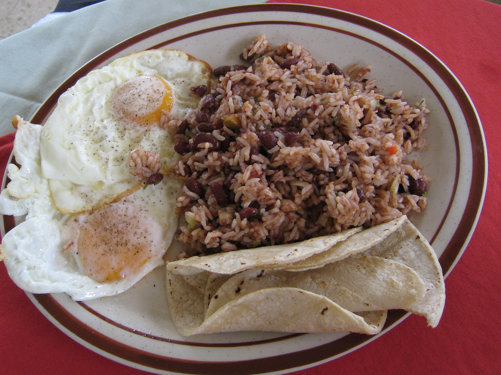

Desayunos
El gallo pinto es un plato tradicional americano que consiste en una combinación de arroz y frijoles. El gallopinto tiene una larga historia y ha sido importante para la cultura de numerosos países latinoamericanos, donde cuenta con diversas versiones. Se le considera el plato típico por excelencia en Costa Rica y Nicaragua.
Platos fuertes

Comidas rápidas